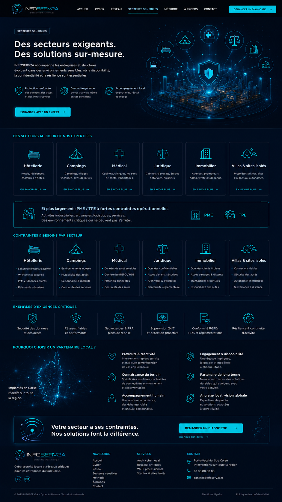

Hôtellerie
Hôtels, résidences, chambres d’hôtes.
En savoir plus
Secteurs sensibles
INFOSERV2A accompagne les entreprises et structures évoluant dans des environnements sensibles, où la disponibilité, la confidentialité et la résilience sont essentielles.
Des secteurs au cœur de nos expertises
Hôtels, résidences, chambres d’hôtes.
En savoir plusCampings, villages vacances, sites de loisirs.
En savoir plusCabinets, cliniques, maisons de santé, laboratoires.
En savoir plusCabinets d’avocats, études notariales, huissiers.
En savoir plusAgences, promoteurs, administrateurs de biens.
En savoir plusPropriétés privées, sites éloignés ou autonomes.
En savoir plusActivités industrielles, artisanales, logistiques, services… Des environnements critiques qui ne peuvent pas s’arrêter.
Contraintes & besoins par secteur
Exigences critiques
Pourquoi choisir un partenaire local ?
Interventions rapides sur site et meilleure compréhension de vos enjeux locaux.
Spécificités insulaires, contraintes de connectivité, environnement et réglementation.
Une relation de confiance, des échanges clairs et un suivi personnalisé.
Une équipe impliquée, joignable et mobilisée à chaque étape.
Nous construisons des solutions durables qui évoluent avec votre activité.
Expertises de pointe et solutions adaptées à votre réalité.